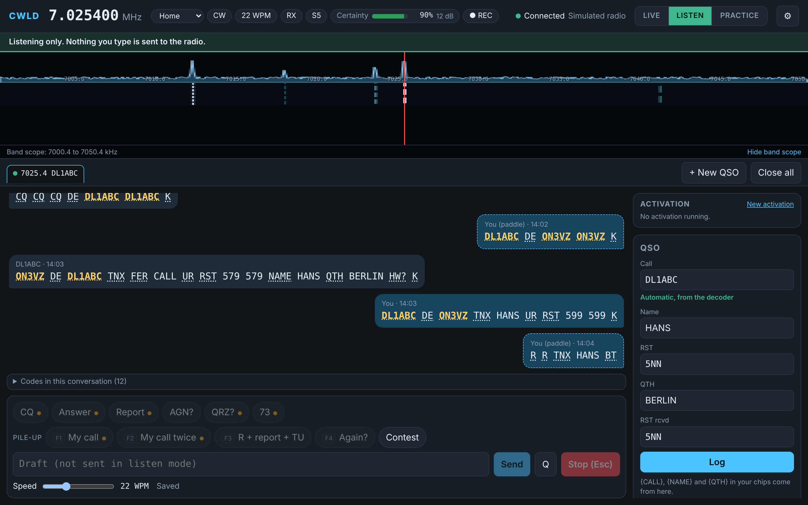

Read CW the way you hear it.
CWLD decodes Morse with a probabilistic decoder that shows how sure it is, sends with your keyboard or with one click, keeps your logbook and practises with simulated stations. Free, open source, made by a radio amateur.
A station in one window
Everything for a CW QSO, a contest or a park activation, with the radio still doing what it does best.
Decoder that tells you how sure it is
Instead of guessing silently, CWLD keeps several readings and shows doubt. Weak or messy signals are not hidden behind confident wrong letters.
Send from the keyboard
Type, or click a ready-made answer. Esc stops at once. Your paddle on the radio keeps working at all times.
A conversation, not a text dump
Each station is a conversation. Click a callsign to put it in the QSO panel, click a chip to answer.
Logbook and ADIF
Contest entry line with F-keys like N1MM, dupes, rate, and an ADIF export with checks before it leaves.
Home and portable
Station profiles and activations for WWFF, POTA and SOTA, with grid, power and reference in every QSO.
Practice against simulated stations
Answer a CQ, run a pile-up or play a contest. Nothing is ever transmitted.
Made to be read at a glance
A narrow waterfall, big readable text, one colour for callsigns. Dark and light themes, English and Dutch without a restart, and a short explanation with every setting.
- Click a callsign to start a QSO
- Chips with {CALL}, {MYCALL}, {NAME}, {RST}, {QTH}
- Live frequency, band, mode and S-meter from the radio
- CWLD never transmits by itself

You always know whether you can transmit
LIVE
The only mode that transmits. Always shown in red.
LISTEN
Receive and decode only. Safe for listening and testing.
PRACTICE
Simulated stations through your headphones. Nothing leaves your computer.
How does your name sound?
Type a word and play it as Morse. This runs in your browser and sends nothing anywhere.
Get the latest version
Download the Windows installer
- File
- Size
- Released
- SHA-256
Could not look up the latest version. Open the release page instead: GitHub Releases
System requirements
- WindowsWindows 10 or 11, 64-bit
- RadioIC-7300 MK II or QRP Labs QMX, with a USB cable
- LinuxPlanned, not released yet
- macOSOn the roadmap
- PrivacyNo account. Only the download button asks GitHub for the latest version.
Learning Morse first?
The CWLD morse trainer is a free web app by the same author: learn the characters, build speed and practise copying.